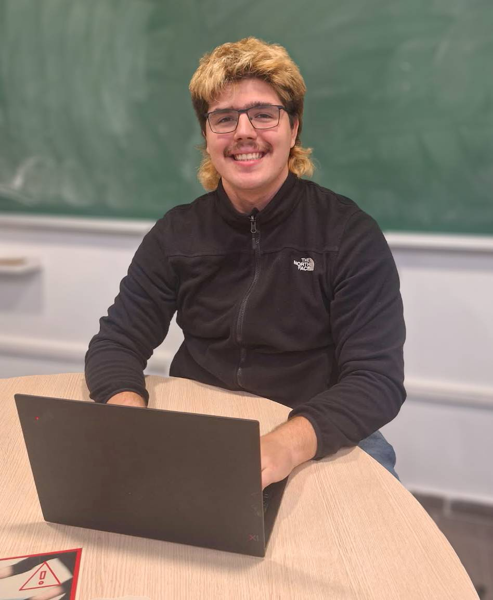

2026
description

While currently studying my 4th year of Mathematics at UPC, I'm looking forward to starting my career in Quantitative Analysis. I'm eager to apply my knowledge base to real use cases, and to learn new tools and strategies for problem-solving.
I love how mathematics allows us to understand reality, and how it helps us make sense of the challenges we face in an abstract plane, so as to better solve them. I'm particularly interested in the ways the translation from mathematics to reality can be implemented, especially in software.
projects
2025
experience
sep 2026–
current
current
AI intern
Universitat Politècnica de Catalunya
Implementation of AI tools in teaching, particularly in Algebraic Structures course.
mar 2026–
jul 2026
jul 2026
Robotics teacher
eXplorium
Teaching robotics and science to children of all ages, making STEM fun and easy to understand.
feb 2026–
jun 2026
jun 2026
Teacher's Assistant
Universitat Politècnica de Catalunya
Support faculty in Differential Calculus course, grading of works and giving extra classes.
jan 2024–
dec 2025
dec 2025
Freelance Tutor
self-employed
Help and support to high school and university students, plus preparation of extra study materials and guides.
education
sep 2023–
current
current
B.Sc. Mathematics
Universitat Politècnica de Catalunya
sep 2021–
jun 2023
jun 2023
International Baccalaureate
Institut Moisès Broggi
skills
- software
- C++, Matlab, Python, Sage, R, Latex, Github, Linux, SQL
- languages
- English, French, Spanish, Catalan
- hobbies
- Design, Photography, Martial Arts
contact
- ianfbowen21@gmail.com
- Ian Francis Bowen Martín
- github
- your-username
- address
- Facultat de Matemàtiques i Estadística, 14 Carrer de Pau Gargalló, 08028 Barcelona, Spain
- references
- jordi.guardia-rubies@upc.edu
sebastia.martin@upc.edu